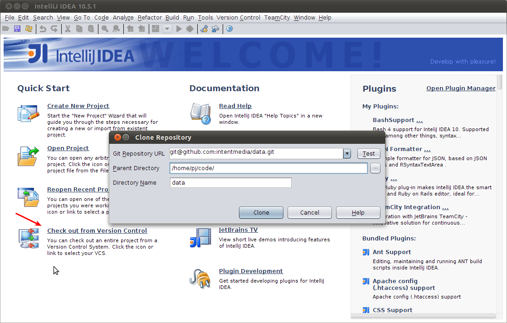
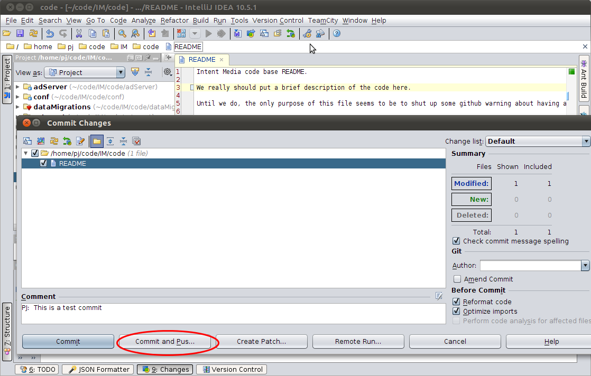
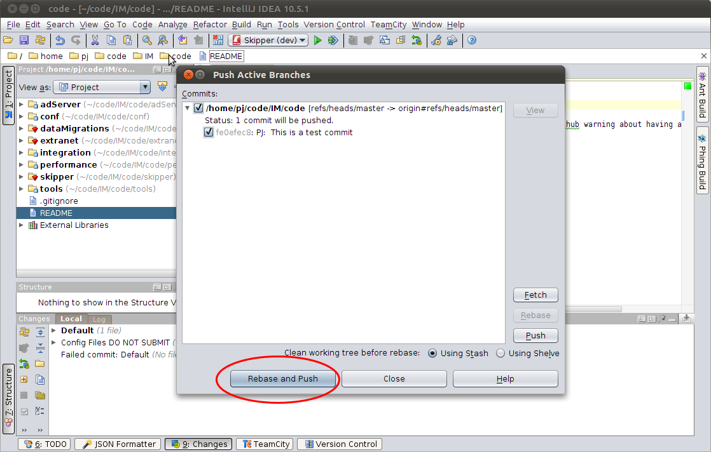
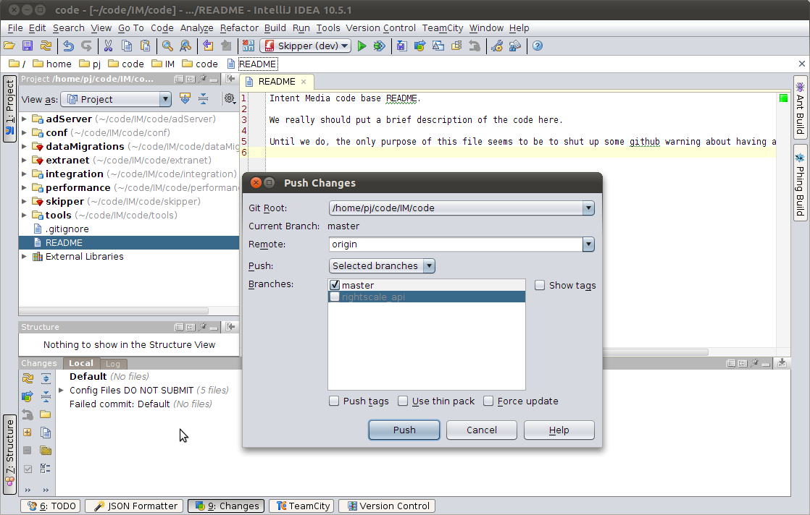
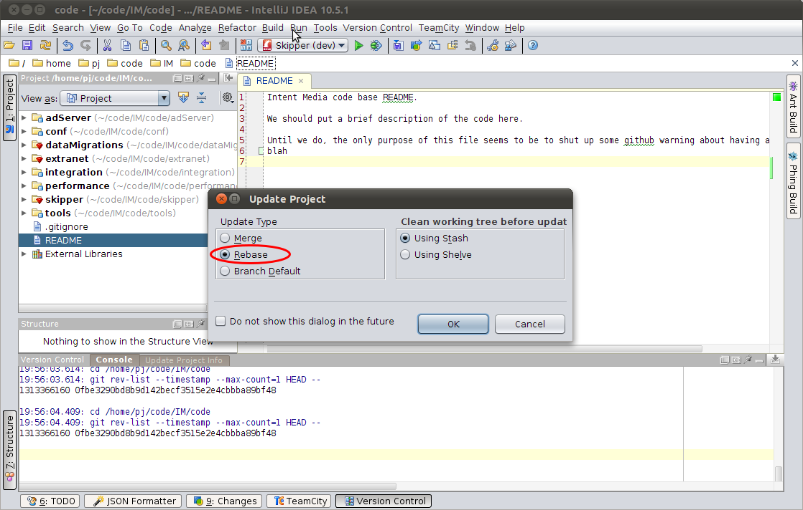
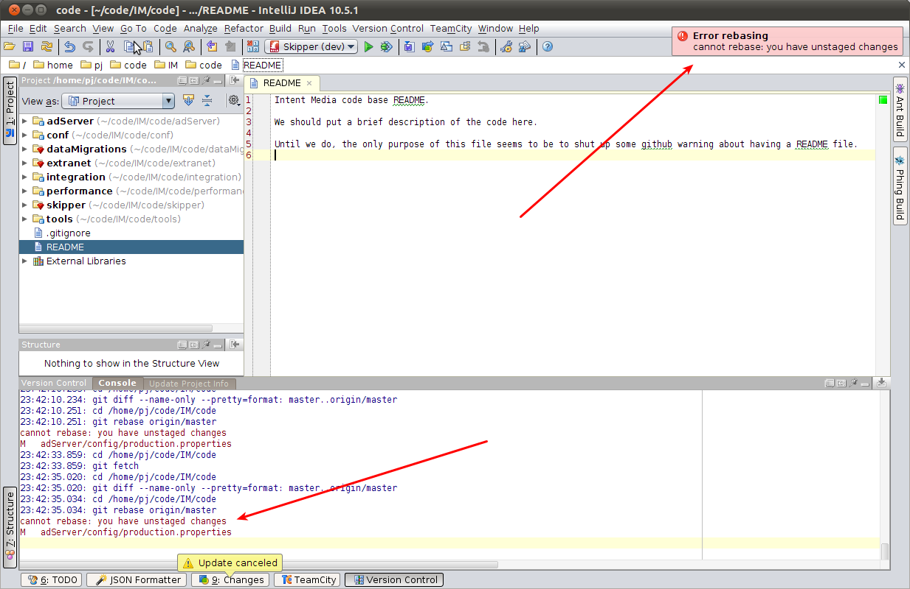

Git @ Intent Media

Agenda
- Git Basics
- Everyday Git with Intellij
- Advanced Usages
Git Basics
What is Git?
- Git is a Distributed Version Control System
- This means the entire history is not only on GitHub but also on everyone’s machine.
- This also means that commiting your changes and pushing them are two different things.
Git Basics
Checking out the code
$ git clone git@github.com:intentmedia/code.git
Initialized empty Git repository in /home/pj/Code/IM/data/.git/
remote: Counting objects: 738, done.
remote: Compressing objects: 100% (396/396), done.
remote: Total 738 (delta 336), reused 680 (delta 279)
Receiving objects: 100% (738/738), 177.44 KiB, done.
Resolving deltas: 100% (336/336), done.
$Git Basics
Checking out the code – Intellij

Git Basics
Checking in your changes
$ echo 'Adding this to the README' >> README
$ git add README
$ git commit --message 'This is an example of a commit'
$ git push
Counting objects: 5, done.
Delta compression using up to 6 threads.
Compressing objects: 100% (2/2), done.
Writing objects: 100% (3/3), 313 bytes, done.
Total 3 (delta 1), reused 0 (delta 0)
To git@github.com:pgroudas/git_preso.git
23cc04d..e076226 gh-pages -> gh-pagesGit Basics
Checking in your changes – Intellij ⌘+k

Git Basics
Checking in your changes – Intellij ⌘+k

Git Basics
Pushing your changes – Intellij

Git Basics
Pulling the latest upstream changes
Working tree must be clean!
$ git pull --rebase
First, rewinding head to replay your work on top of it...
Fast-forwarded master to db46daeff68ab4d58283cc5f504baceb7193a4fa.Git Basics
Pulling the latest upstream changes – Intelij ⌘+t
Handles your unclean working tree for you!



Everyday Git with Intellij
Update code frequently with ⌘+t and select Rebase update type
- This keeps a linear and simple revision history that is easy to understand
Commit with ⌘+k and you generally want to push at the same time
- If it prompts you saying that you are behind, select rebase and push
What to do if something goes wrong?
Most common problems occur while pulling down upstream changes
- Check the Version Control Console for detailed output

If you ever need help
- Campfire
- Intellij Git Integration
- github:help
- git community book
- git man pages available via
git helpcommand in terminal